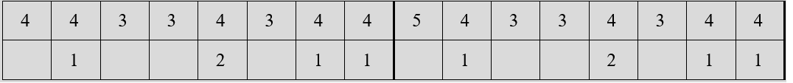
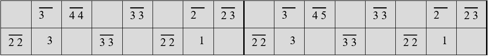
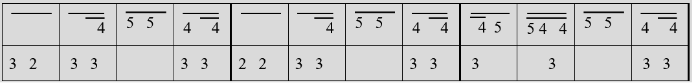

The kulintang is a set of gongs laid out in a row and struck with sticks. The number of gongs may vary among regions and groups. This webpage focuses on the Maguindanaon kulintang. The gongs are arranged in ascending pitch order, with the lowest sounding gong on the leftmost reach of the player.
The kulintang can be played solo or with the Palabunibunyan, a musical ensemble consisting of other gongs played with mallets, sticks and/or by hand. Although the study of the instrument and repertoire is done by passing on oral and aural traditions, it can also be learned with numbered musical notation. The notation below is taken from page 31 of Aga Mayo Butocan's book "Palabunibunyan: A Repertoire of Musical Pieces for the Maguindanaon Kulintang".
How to Play

Excerpts
Below are excerpts from pieces and how they might sound like when played. There is no standard tuning for the kulintang; different sets may have differing scales or [sound] intervals.
Binalig
Tidtu
Sinulog a Minuna
※ 〜 ※ 〜 ※ 〜 ※ 〜 ※ 〜 ※ 〜 ※ 〜 ※ 〜 ※ 〜 ※ 〜 ※
Give reading a try! Press numbers 1 to 8 on your keyboard.